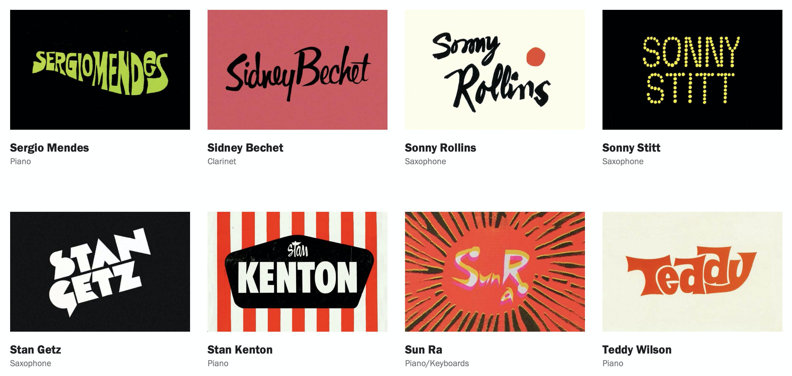
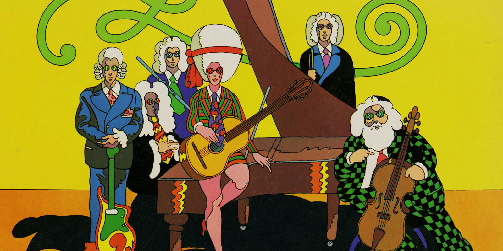
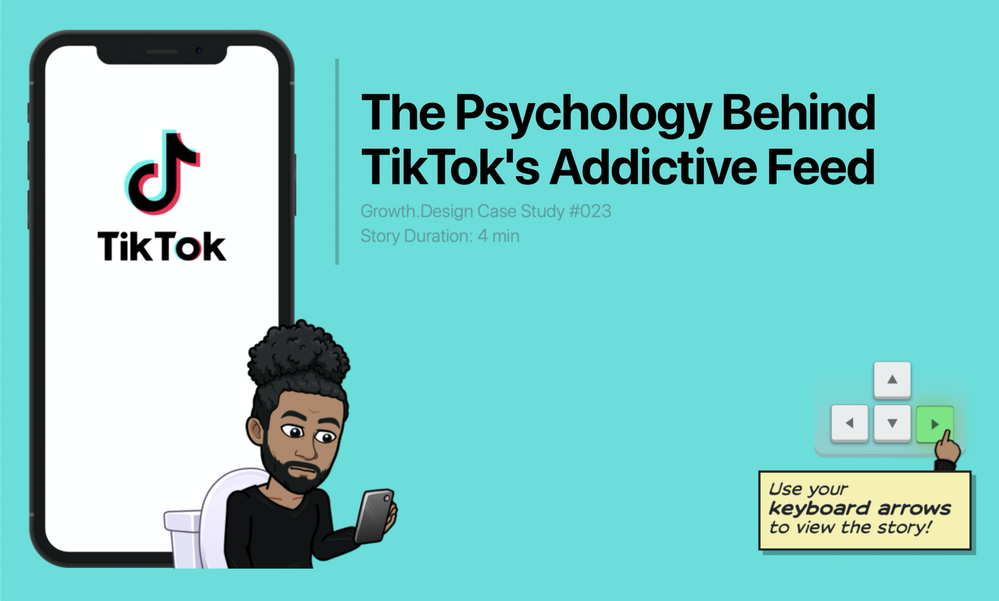
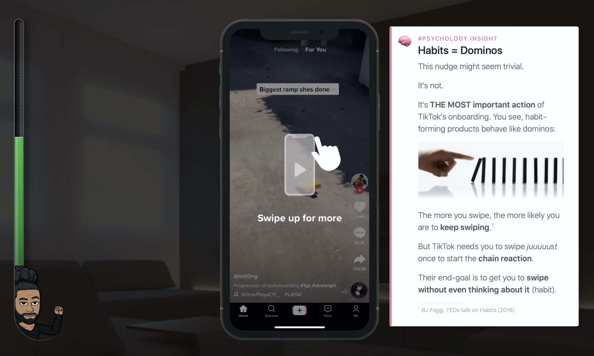
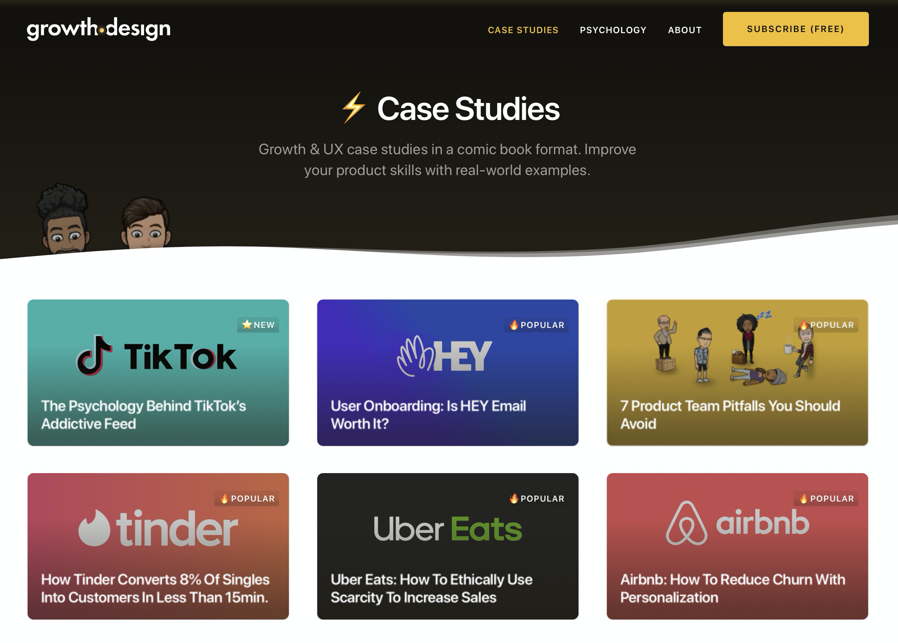
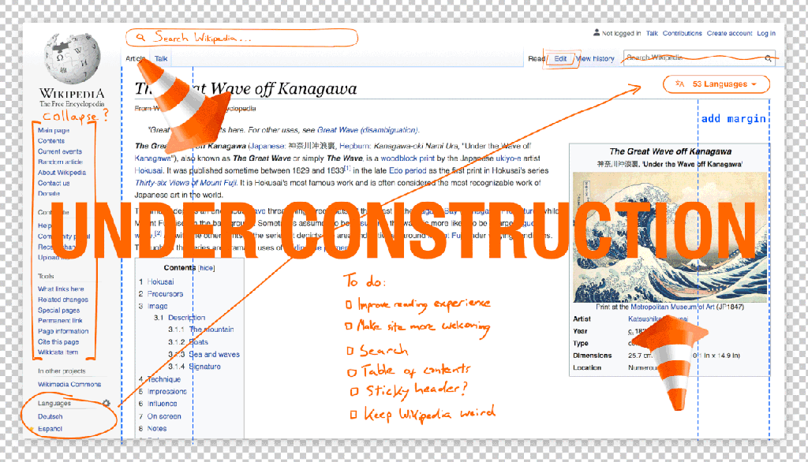
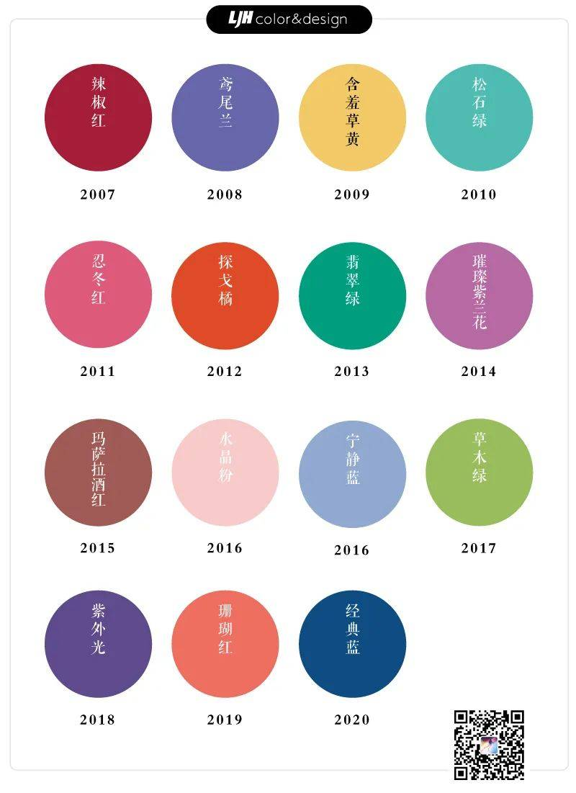
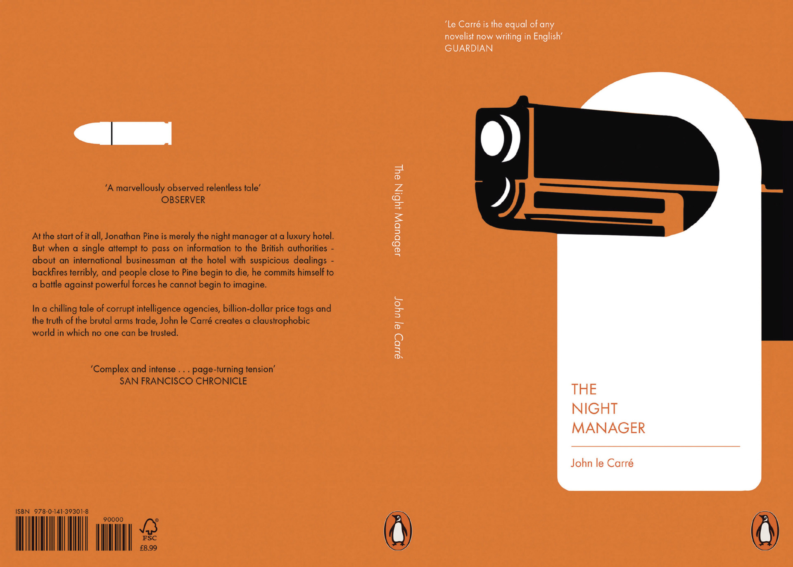

设计周刊 Design Weekly #27
🏷 设计灵感
爵士音乐家的专属字体
https://reaganray.com/2020/09/22/jazz-lettering.html
专辑封面和演出海报的历史是从爵士乐开始的。作者将 100 张爵士专辑的封面和海报中的字体单独提取出来，每个艺术家只选了一款，方便大家浏览分析。封面和海报的文章在这里 可以浏览。


🏷 案例研究
TikTok背后的成瘾分析
https://growth.design/case-studies/tiktok-feed-psychology/
growth.designde 的这个案例研究通过沉浸式的展示，分析了TikTok使用户上瘾的心理学原理，以及如何完善使之更加人性化。
growth.design是由Dan Benoni和Louis-Xavier Lavallee两位创始人建立，通过增长（科学的改善业务目标）和设计（以人为本的设计解决方案）来帮助产品实现超越业务目标同时让用户满意。值得大家收藏学习。



🏷 设计新闻
维基百科10年来第一次换了新的面貌。
这个项目历时多年，旨在为长期使用的用户创造近似的体验，同时给新用户提供简单直观的体验。

🏷 设计趋势
你认为流行色是什么？
https://www.shejipi.com/452520.html
流行色其实是一个非常重要的消费指南，它可以影响人们的消费方式、刺激经济发展，尤其是在传统制造业如服装、家居及美妆、较快速消费的日用品等行业里，非常需要流行色来引领消费浪潮，刺激人们进行消费。作为设计师或者一般色彩的爱好者而言，要避免盲目跟风，理智掌控可使你更加从容。

🏷 平面设计
用封面设计讲故事
https://www.topys.cn/article/30984.html
企鹅出版社（Penguin Random House）颁发了他们的Student Design Award。在成人小说封面奖（Adult Fiction Cover Award）、成人非小说封面奖（Adult Non-Fiction Cover Award）以及儿童作品封面奖（Children’s Cover Award）三个类别中，共9幅优秀作品获奖。一起看看年轻的获奖选手是如何重新理解及演绎这些故事的。
